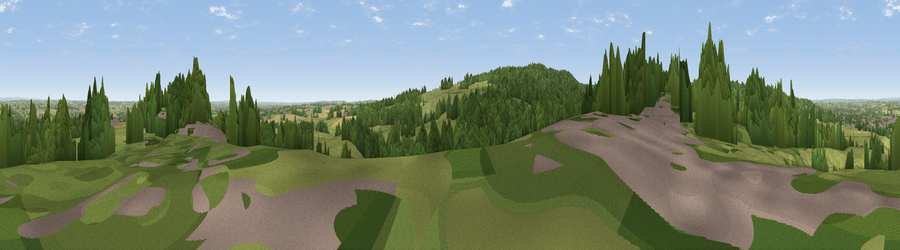

Viewpoint near Upper Longdon
#29300 in England · top 45% of its area beats it · near Upper LongdonWhere it is
The exact computed spot (SK 05975 14525). Click the marker for map links.
The view, rendered

A 360° render of this exact spot computed from the terrain model, tree cover and land cover — summer colours, afternoon light, calibrated against photographs of famous viewpoints. Real trees, hedges and buildings will differ in detail.
The panorama
Grey silhouette: terrain skyline in each direction (720 bearings, Earth curvature and refraction included). Dashed green: skyline with trees (+15 m) and buildings (+8 m) as obstacles. Blue strip: how far the ground is visible on each bearing.
Where the view opens
Wedge length = distance to the farthest visible ground on that bearing (vegetation-aware). Rings at 10, 25 and 50 km.
What fills the view
52% grassland · 38% woodland · 7% cropland · 3% built-up
Angular shares of the visible panorama (visual magnitude), not map area. Landscape diversity 0.44 (0–1 Shannon).
Key numbers
More beautiful places nearby
The staircase of upgrades: each row has a higher view potential than everything closer. Driving times are estimates from straight-line distance, calibrated against real road routing — check an actual route before setting out.
| Place | Direction | Drive | Score |
|---|---|---|---|
| Viewpoint near Cannock Wood | SW · 2 km | ~4 min | 50.7 |
| Viewpoint near Upper Longdon | W · 2 km | ~4 min | 55.9 |
| Viewpoint near Prospect Village | SW · 4 km | ~10 min | 58.1 |
| Wimblebury Hill | SW · 5 km | ~10 min | 62.0 |
| Viewpoint near Streetly | S · 17 km | ~30 min | 69.5 |
| Viewpoint near Wootton | N · 32 km | ~49 min | 74.4 |
| Viewpoint near Wootton | N · 32 km | ~50 min | 74.8 |
| Tissington Hill | NNE · 39 km | ~58 min | 75.5 |
52.72834, -1.91296 · source: screening · position refined by local search. Computed location — check access rights before visiting.